地政学
ソフィアはバルカン半島の内陸で、EU、NATO、黒海、トルコ、中欧を結ぶ政治拠点です。ロシアとの歴史的記憶、エネルギー、移民、ウクライナ戦争後の安全保障が、首都の日常外交に重なります。国境外の動きも生活に響きます。
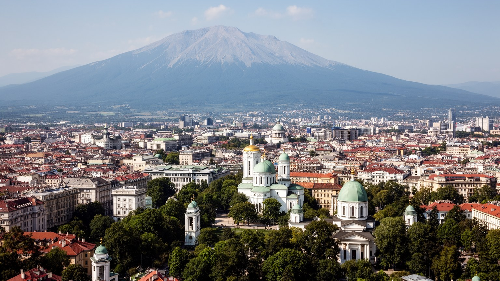
🇧🇬 ブルガリア / 首都 / World City Atlas
ヴィトシャ山の北麓に広がる盆地の首都です。政府中枢、EUとNATOの東南欧拠点、正教会の聖堂、ローマ遺跡、オスマン時代の痕跡、社会主義期の住宅、IT産業が、歩ける距離で重なります。
都市の骨格
ソフィアは大河や海港の都市ではなく、山と盆地、街道、温泉、政治中枢が作った首都です。中心部ではローマ遺跡、モスク、正教会、国会、地下鉄駅、ITオフィスが近くに並びます。
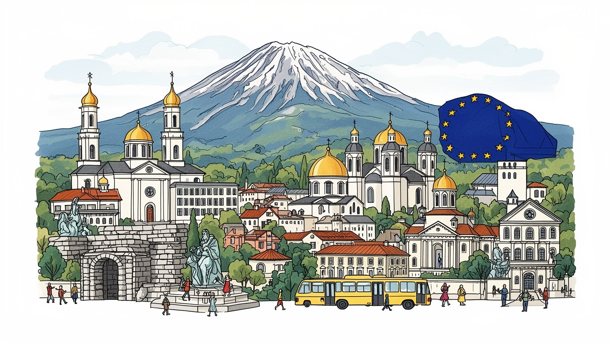
ソフィアはバルカン半島の内陸で、EU、NATO、黒海、トルコ、中欧を結ぶ政治拠点です。ロシアとの歴史的記憶、エネルギー、移民、ウクライナ戦争後の安全保障が、首都の日常外交に重なります。国境外の動きも生活に響きます。
政府、大学、IT、アウトソーシング、金融、建設、観光が雇用を作ります。賃金は国内で高い一方、住宅費と人材流出も課題です。若い技術者、公共部門、現場労働が別々の速度で街を動かしています。格差も駅前に見えます。
正教会の聖堂を中心に、モスク、シナゴーグ、カトリック教会、古代遺跡が近くにあります。ブルガリア語、キリル文字、民族音楽、劇場、大学文化が、東西の境界都市らしい厚みを作っています。祝祭も街を彩ります。
住民は地下鉄、トラム、団地、市場、公園、山麓を使い分けます。旅行者は聖堂、ローマ遺跡、温泉、博物館、ヴィトシャ山を短時間で巡れます。冬の空気汚染と道路混雑は、暮らしの課題です。週末は山へ向かいます。
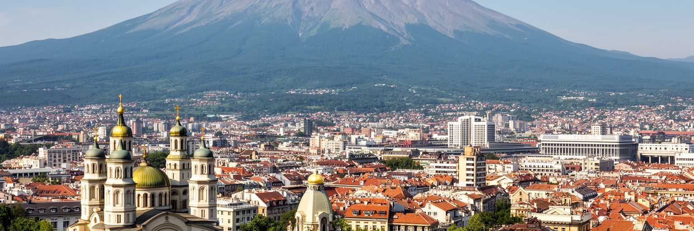
ソフィアを最初に特徴づけるのは、ヴィトシャ山を背負った盆地の地形です。街は海港でも大河の河口でもなく、バルカン山脈とロドピ山系へ向かう内陸の交通路、温泉、山麓の防御性、平坦な居住地によって育ちました。中心部から南を見れば山が近く、北へ向かえば広い盆地と高速道路が国土へ開きます。この配置は、首都としての視線を二つに分けます。一方では山が週末の散策、スキー、展望、涼しさを与え、住民の生活に自然を近づけます。もう一方では盆地が冬の霧、冷気、排気の滞留を起こし、空気汚染を生活問題にします。都市の美しさと環境負荷が同じ地形から生まれる点が、ソフィアの読みどころです。山麓の高級住宅、中心部の官庁、北側や西側の工業・住宅地区は、同じ首都の中でも違う生活条件を持ちます。地形を読むと、観光写真の背景に見える山が、交通、住宅価格、気候、余暇、健康を左右する都市の基盤であることが分かります。ソフィアは山を眺める首都ではなく、山に日常を支えられ、同時に盆地の弱さを管理する首都です。山麓へ伸びる道路や住宅開発は便利さを広げますが、森の保全、斜面の乱開発、冬の移動安全も問います。首都の魅力は、自然へ近いことを公共の利益として守れるかにもかかっています。山は週末の逃げ場である前に、都市計画を映す鏡でもあります。重要です。
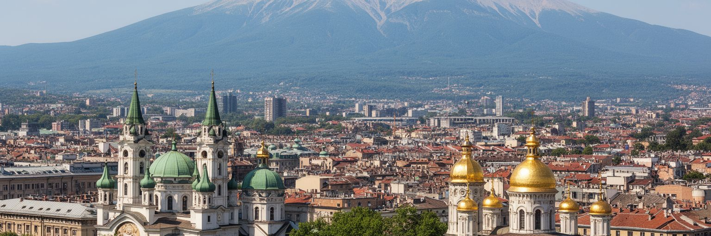
ソフィアの中心には、国会、大統領府、閣僚会議、裁判所、省庁、外国公館が集まります。ブルガリアはEUとNATOの加盟国であり、首都の政治は国内行政だけでなく、欧州の規制、基金、国境管理、エネルギー、安全保障と結びついています。街路の広場では、汚職、司法改革、生活費、ロシアとの距離、ウクライナ支援、環境政策をめぐる抗議も起きます。社会主義期の国家建築、独立後の制度改革、EU加盟後の行政近代化が、同じ中心部に重なっているため、政治は建物の様式にも現れます。西欧へ近づく意志が強い一方、ブルガリア社会にはロシア文化への親近感、エネルギー依存の記憶、地方との格差、移民流出への不安もあります。ソフィアはそれらを調整する場所です。EU基金は地下鉄、道路、公共施設、文化保存を支えますが、資金の使い方への監視も必要です。政治都市としてのソフィアを読むには、官庁街の威厳だけでなく、市民が広場で何を求め、どの制度が生活を変えるのかを見る必要があります。首都は欧州への窓であると同時に、国内の不満が最も見えやすい舞台です。選挙のたびに連立交渉が長引くこともあり、官庁の実務と街頭の不信は近くにあります。行政の透明性、司法の独立、地方への再分配は、首都の信頼を左右する日常的なテーマです。広場はその緊張を映します。重要です。
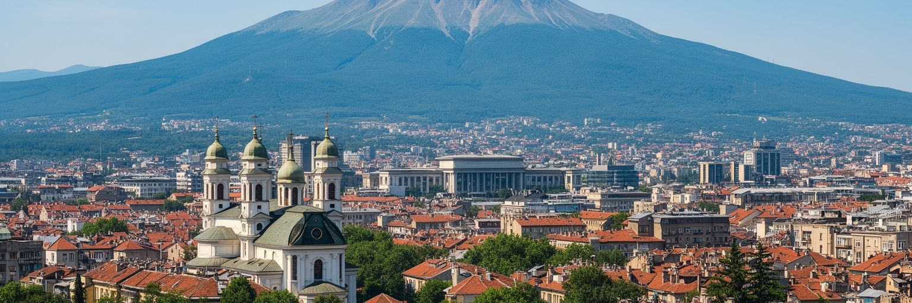
ソフィアはブルガリア経済の最大の集積地で、IT、アウトソーシング、金融、通信、大学、行政、建設、観光が雇用を作ります。社会主義期からの理工系教育と数学文化、EU市場へのアクセス、比較的低い法人税、英語を使う若い人材が、国際企業の開発拠点やサービスセンターを呼び込みました。中心部やビジネスパークにはガラス張りのオフィスが増え、カフェで働く技術者やスタートアップの姿も目立ちます。しかし、成長は均等ではありません。IT職の賃金は国内平均を大きく上回る一方、公共部門、清掃、飲食、交通、介護、建設の労働は生活費上昇に追いつきにくいことがあります。地方から若者が集まるほど、ソフィアと他地域の格差も広がります。海外移住を選ぶ人が多い国で、首都が魅力的な職場を作ることは重要ですが、住宅、保育、交通、医療が追いつかなければ、成長は一部の専門職だけのものになります。ソフィアの産業を読むことは、安い外注先という古い見方を越え、技術都市としての可能性と、都市を支える低賃金労働の条件を同時に見ることです。首都の競争力は、コードを書く人と街を動かす人の双方が暮らせるかで測られます。大学と企業の距離が縮まるほど、研究、起業、実務教育の循環も強まります。その一方で、地方都市から人材を吸い上げすぎない産業政策も必要です。
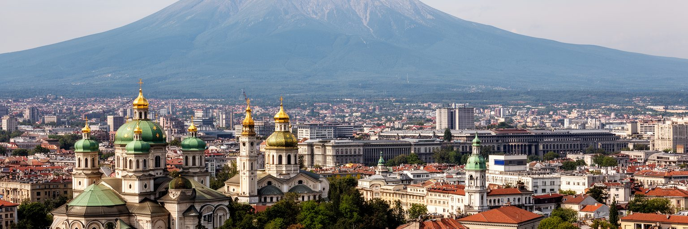
ソフィアの宗教的な中心を象徴するのは、アレクサンドル・ネフスキー大聖堂です。金色のドームは観光名所であると同時に、ブルガリア正教、オスマン支配からの解放、ロシアとの複雑な歴史を背負う記念建築です。礼拝の蝋燭、聖歌、イコン、復活祭の行列は、国家の歴史を個人の祈りへつなぎます。ただし、ソフィアの宗教景観は正教会だけではありません。中心部にはバニャ・バシ・モスク、ソフィア・シナゴーグ、カトリック教会もあり、オスマン時代、多民族の商業、ユダヤ人共同体、近代国家の形成が近い距離で読めます。宗教は過去の遺産として保存されるだけでなく、結婚式、葬儀、祝日、食、家族の記憶、政治的象徴として日常に残ります。社会主義期には宗教が公的空間で抑制されましたが、体制転換後には信仰と国民文化の関係が再び見直されました。ソフィアを歩くと、祈りの場が観光写真の対象になりながら、同時に住民の静かな生活儀礼を支えていることが分かります。宗教の層を読むには、ドームの美しさだけでなく、誰がその場所で祈り、どの記憶が祝われ、どの共同体が街の中心に残っているかを見る必要があります。観光客が集中する聖堂でも、朝の短い祈りや祝日の家族連れは日常そのものです。信仰の場所を生活の場所として見れば、首都の寛容と緊張の両方が見えてきます。
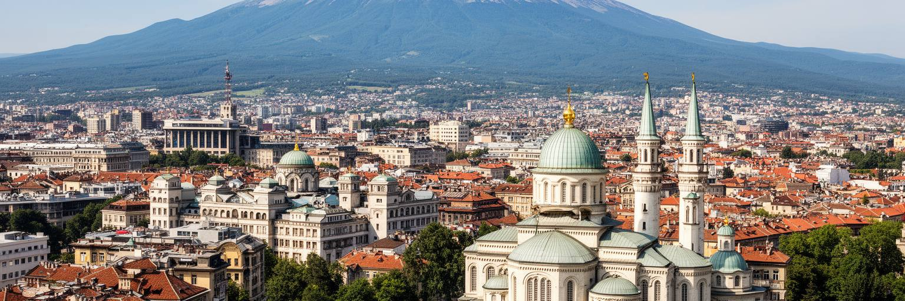
ソフィアの中心部では、地下鉄駅の近くに古代ローマ都市セリディカの遺構が露出し、歩道の下に城壁、浴場、街路の跡が見えます。地上にはオスマン時代のモスクや温泉施設、近代ブルガリアの官庁、社会主義期の記念的建築が並びます。都市の歴史は一つの時代で塗り替えられたのではなく、何度も上書きされ、その断面が街角に残っています。温泉は古代から人を集め、ローマ帝国、ビザンツ、ブルガリア帝国、オスマン帝国、近代国家がそれぞれの制度と宗教を持ち込みました。現在のソフィアはキリル文字の欧州首都ですが、その基礎にはラテン語、ギリシア語、トルコ語、ユダヤ共同体、バルカン商人の記憶もあります。観光で遺跡を眺めるだけでは、こうした重なりの政治性は見えにくいです。どの遺構を保存し、どの時代を誇り、どの記憶を控えめに扱うかは、現在の国民意識と結びついています。ソフィアの魅力は、古代の石が地下に閉じ込められず、交通、買い物、通勤の動線に組み込まれている点です。市民は毎日の移動の中で、帝国の跡と近代国家の施設を同時に横切ります。歴史は博物館の中だけでなく、駅前の広場そのものに置かれています。再開発や地下鉄工事は遺跡を発見する機会にも、壊す危険にもなります。都市の成長と保存をどう折り合わせるかが、ソフィアの歴史を未来へ渡す鍵になります。
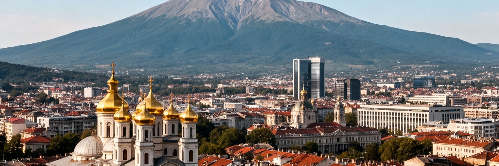
ソフィアの日常は、中心部の石畳や聖堂だけでは見えません。大きな住宅地、社会主義期の集合住宅、近年の分譲マンション、郊外の戸建て、学生用の部屋、古い中庭住宅が、住民の生活を支えています。リュリン、ムラドスト、ドゥルジバのような大規模住宅地区では、地下鉄やバス、学校、診療所、商店、市場、公園が毎日の動線になります。体制転換後の私有化と不動産市場の拡大は、住宅の修繕、管理、断熱、駐車場、緑地利用を住民の課題にしました。若いIT労働者や学生にとっては家賃上昇が重く、年金生活者にとっては暖房費と建物維持が大きな負担です。街角の市場や小商店は、野菜、パン、乳製品、花、家庭用品を売り、近郊農村と都市を結びます。カフェや大型商業施設が増えても、近所の店と公共交通は生活の安定に欠かせません。ソフィアの住宅を見ることは、社会主義期の都市計画が現在の市場経済の中でどう使い直されているかを見ることです。古い団地は単なる灰色の景観ではなく、家族、移住者、高齢者、学生が同じ首都に住み続けるための現実的な基盤です。日常の質は、建物の外壁よりも、交通、暖房、緑地、近隣関係の持続で決まります。人口が首都へ集まるほど、新築住宅は増えますが、保育園、診療所、歩道、駐車場は遅れがちです。暮らしやすさは、開発の速さではなく、地区ごとの小さな公共サービスで測られます。
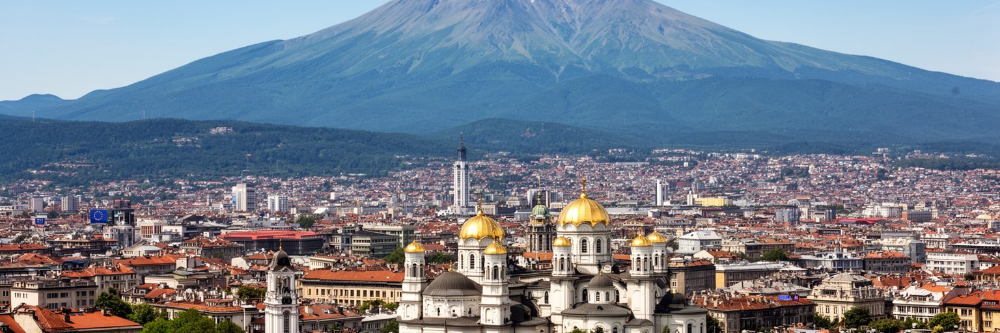
ソフィアの交通は、地下鉄、トラム、トロリーバス、バス、タクシー、自家用車が重なって成り立ちます。地下鉄は空港、中心部、大学、住宅地区、ビジネスパークを結び、EU資金も使いながら拡張されてきました。古いトラムは街の記憶を残し、バスとトロリーバスは地下鉄の届かない住宅地を支えます。一方で、自家用車の依存は渋滞、駐車場不足、排気、歩行者空間の圧迫を生みます。盆地地形のため、交通排出は冬の空気汚染にも関わります。交通政策は単なる移動の効率ではなく、健康、住宅、労働、観光の問題です。中心部で働く人、郊外の団地から通う学生、空港に向かう旅行者、山へ行く週末の家族は、同じネットワークを別々の目的で使います。地下鉄駅の近くでは不動産価値が上がり、通勤時間が短くなる一方、駅から遠い地区ではバスの本数や道路の安全が生活の差になります。ソフィアを読むには、聖堂や広場だけでなく、朝の乗換、古いトラムの車内、歩道に乗り上げる車、空港へ直結する地下鉄を観察する必要があります。交通は首都を欧州の都市らしく整える道具であり、同時に誰が便利な場所に住めるかを示す社会地図でもあります。自転車道や歩行者空間の整備は進みますが、車中心の習慣を変えるには時間がかかります。公共交通を使いやすくすることは、空気、家計、都市の公平性を同時に改善します。
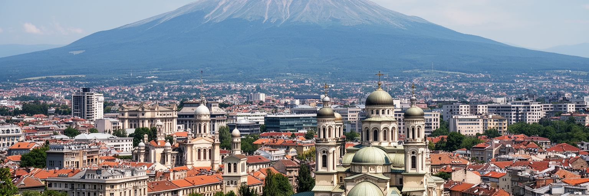
ソフィアはブルガリアの教育と文化の中心でもあります。ソフィア大学をはじめ、理工系、医学、芸術、音楽、演劇の教育機関が集まり、地方から若者を引き寄せます。劇場、美術館、オペラ、映画館、書店、独立系のギャラリー、音楽クラブは、首都の夜と週末を形作ります。ブルガリア語とキリル文字は、街の看板、新聞、学校、行政で日常的に使われ、スラヴ文化と欧州制度の接点を可視化します。文学や演劇には、オスマン支配、民族復興、社会主義、体制転換、移民の経験が繰り返し現れます。若い世代は英語で働き、海外の音楽や映画を消費しながら、家族や学校ではブルガリア語の文化を受け継ぎます。文化の国際化は開放性を高めますが、才能ある人材が国外へ流れる問題もあります。ソフィアの文化を読むには、大聖堂や博物館だけでなく、大学の講義、書店の棚、演劇の客席、学生の家賃、アーティストの仕事場を見る必要があります。文化は観光資源である前に、社会が自分の歴史を語り直す方法です。首都に集まる教育機関と芸術は、ブルガリアが東欧、バルカン、EUのどの物語を選び直すのかを映しています。文化施設の多くは中心部に集まるため、郊外の若者が夜に帰れる交通も重要です。学びと表現の場へアクセスできるかが、首都文化の広がりを決めます。小さな会場も街を育てます。
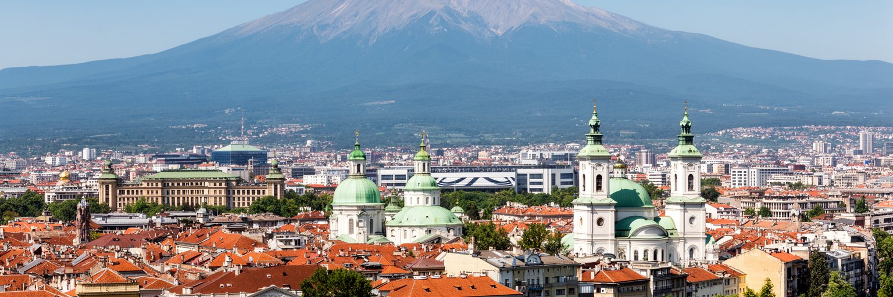
ソフィアの気候は大陸性で、夏は暑く乾き、冬は寒く、雪や霧もあります。ヴィトシャ山は涼しさと景観を与えますが、盆地地形は冬の冷気をため、排気や暖房の煙を逃がしにくくします。空気汚染は首都の大きな社会問題で、古い車、石炭や木材の暖房、建設粉じん、道路の混雑、気象条件が重なります。所得の低い世帯ほど安価な暖房に頼りやすく、古い住宅ほど断熱が弱いため、環境問題は貧困や住宅政策とも結びつきます。夏には熱波と乾燥が公園、街路樹、水資源、屋外労働に影響します。気候対策は、排出規制だけでなく、住宅の断熱改修、公共交通の改善、歩行者空間、緑地の保全、低所得世帯への支援を必要とします。山に近い都市であることは、自然が豊かであるという単純な意味ではありません。山と盆地は、市民に余暇と健康の資源を与える一方、空気を閉じ込める条件にもなります。ソフィアを読むには、晴れた日の山の美しさと、冬の灰色の空を同時に見る必要があります。都市の環境性能は、中心部の景観よりも、寒い日に誰が暖かく、きれいな空気で暮らせるかで測られます。大気の改善には、古い暖房設備の更新、低排出車の管理、建設現場の粉じん対策が必要です。環境政策が家計を圧迫しないよう、補助制度と説明も欠かせません。空気は政策の成果を住民がすぐ感じる分野です。重要です。
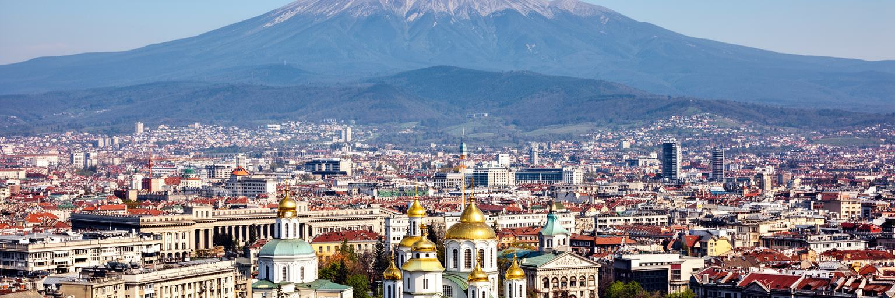
ソフィア観光の強みは、首都中心部の歴史散策とヴィトシャ山の自然体験を短い時間で組み合わせられることです。アレクサンドル・ネフスキー大聖堂、聖ソフィア聖堂、ロトンダ、バニャ・バシ・モスク、中央市場、ローマ遺跡、旧鉱泉浴場、国立劇場は徒歩圏にあり、都市の時代層を一日でたどれます。さらに南へ向かえば、ボヤナ教会や山麓の登山道、冬のスキー、夏のハイキングが待っています。旅行者にとっては手頃な物価、空港から中心部へのアクセス、周辺国への移動のしやすさも魅力です。ただし、観光の価値は名所の数だけで決まりません。保存された建物が住民の生活から切り離されず、市場、カフェ、教会、劇場、公共交通と一緒に使われていることが、ソフィアらしさを作ります。観光客が増えると中心部の宿泊、短期賃貸、飲食価格、公共空間の使い方にも影響します。ソフィアはまだ過度な観光都市ではありませんが、遺産を守りながら住民の生活を保つ視点が必要です。山へのアクセスも、自然保護、交通、廃棄物、季節混雑と結びつきます。良い旅は、聖堂の写真だけでなく、山と街を毎日使う住民のリズムを尊重することから始まります。市場での食事、温泉の記憶、夜の劇場、郊外行きのトラムを組み合わせると、名所だけではない首都の厚みが見えます。短い滞在でも、山麓都市の日常へ踏み込めます。
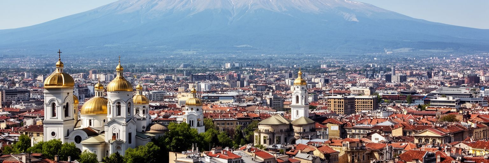
ソフィアを読む面白さは、派手な世界都市の記号よりも、複数の歴史と現在の課題が近い距離で見える点にあります。ヴィトシャ山は街に美しい背景を与えますが、同じ地形は冬の空気汚染を強めます。正教会の大聖堂は国民記憶を支えますが、中心部にはモスク、シナゴーグ、ローマ遺跡も残り、単一の物語では説明できません。EUとNATOの首都として制度改革を進める一方、ロシアとの記憶、エネルギー、汚職への不満、地方格差、若者の海外移住も抱えます。IT産業は新しい中間層を育てますが、住宅費や低賃金労働の負担を消すわけではありません。地下鉄とトラムは都市を便利にしますが、自動車依存と団地の老朽化は残ります。ソフィアは完成した観光絵葉書ではなく、バルカンの内陸首都が欧州の制度、古い宗教、社会主義期の都市構造、市場経済、山麓の自然を調整し続ける場所です。旅行者は数日の滞在で、聖堂、温泉、遺跡、山、地下鉄を簡単に巡れます。しかし本当の読みどころは、その近さが生む矛盾です。ソフィアは小さく見えて、東西、山と盆地、記憶と改革、成長と生活費が同じ街路に並ぶ首都です。そこでは、欧州化は抽象的な理念ではなく、駅、住宅、空気、裁判所、大学、家計の中で試されます。山麓の穏やかな眺めの下に、国の将来をめぐる実務と議論が続いています。今もです。